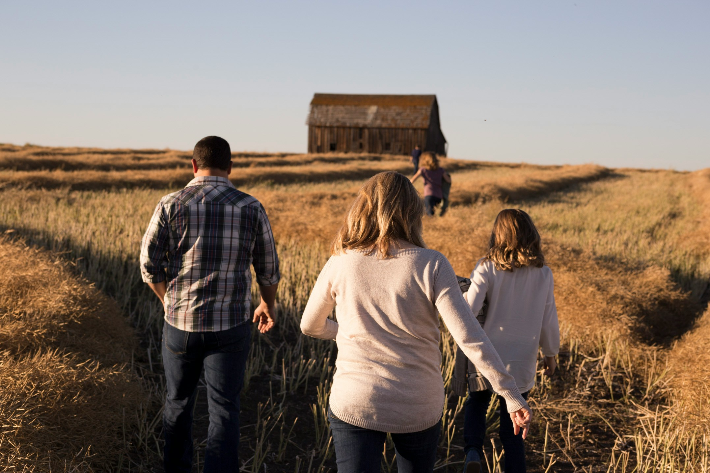

Festejando a conexão campo-cidade
O papel da agricultura familiar no abastecimento urbano
A agricultura familiar desempenha um papel crucial no abastecimento urbano, sendo a principal fonte de
produção de alimentos em muitas regioẽs.A agricultura familiar é sinal de comida na mesa, geração de emprego
e renda, paz no campo e bom funcionamento da economia. O Brasil tem bons exemplos disso para mostrar, pois
temos iniciativas que fortalecem o campo com a mão de obra familiar, o que beneficia tanto a família quanto
o mercado.

Da onde vem oque eu como?
O alimento que você compra no supermercado ou na feira passa por um longo e complexo caminho até chegar à sua
casa. Essa jornada é chamada de cadeia produtiva e envolve várias etapas.A maioria dos alimentos que você
come tem origem na agricultura, pecuária ou pesca, dependendo do que você consome. Alimentos como frutas,
verduras, legumes e grãos são cultivados em fazendas, enquanto carne, leite e ovos vêm de animais criados em
fazendas. Os pescados, como peixes e frutos do mar, são retirados dos oceanos, rios e lagos.

Referências
OpenAI, Textos gerados pelo Chatgpt sobre o Tópico "Agricultura Familiar", 23 de maio 2025,https://chatgpt.com.br/